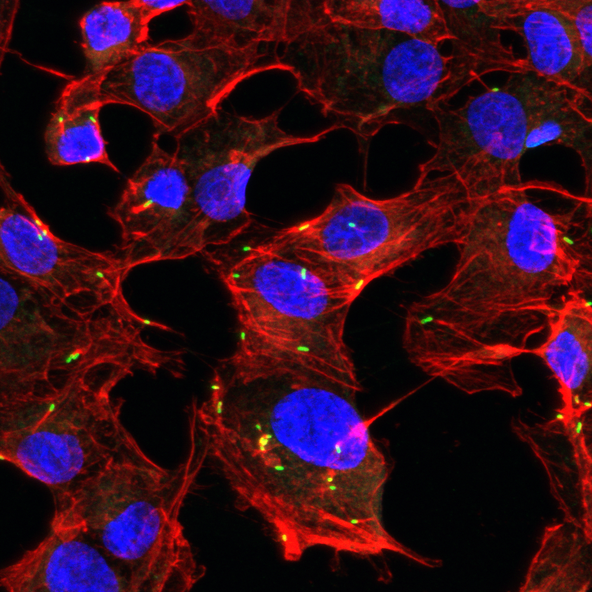
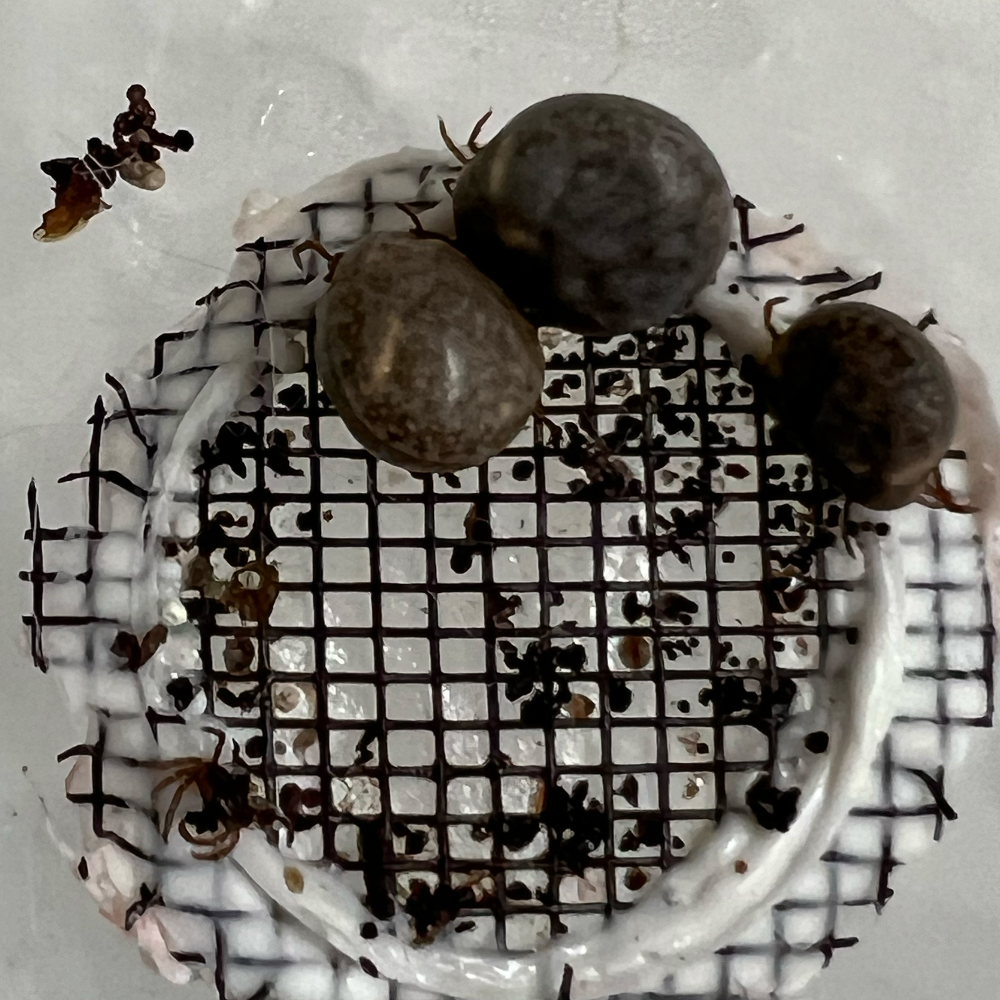
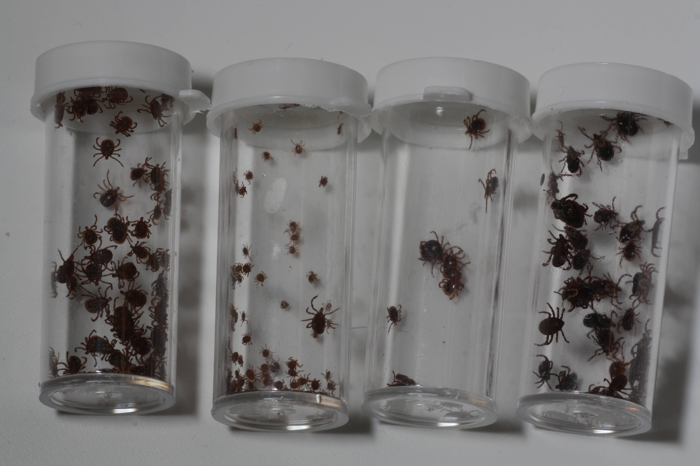

Our current research goals are to:
1) understand genetic requirements for rickettsial intracellular lifecycle
2) characterize molecular mechanisms involved in rickettsial pathogenesis and tick transmission
3) survey tick populations and study their impacts on the prevalence of spotted fever rickettsioses in patients.
kkaebi transposon for insertional mutations in Rickettsia
We are interested in identifying rickettsial genes that contribute to the intracellular lifecycle of Rickettsia, a group of pathogens that continue to cause vector-borne infectious diseases with significant morbidity and mortality throughout the world. With the ongoing environmental changes, the public health burden for vector-borne rickettsial diseases has increased in recent years. Unfortunately, the lack of genetic tools has hampered the research progress in identifying genes involved in the rickettsial intracellular lifecycle. Thus, we developed a random insertional transposon mutagenesis scheme and are generating mutant libraries of Rickettsia conorii (spotted fever group) and Rickettsia typhi (typhus group). With kkaebi libraries, we aim to identify conserved and unique molecular mechanisms enabling rickettsial survival in mammalian hosts and arthropod vectors.
Polysaccharide synthesis operon of Rickettsia

Within mammalian hosts, Rickettsia preferentially targets vascular endothelial cells, resulting in acute vasculitis. However, it remains unclear how Rickettsia-endothelial cell interactions modulate rickettsial pathogenesis. Interestingly, our work identified kkaebi variants of R. conorii that synthesize chemically and immunologically distinct LPS molecules in Rickettsia. Our work further determined that pso variants display altered levels of surface proteins, resulting in defective attachment and invasion of endothelial cells. Interestingly, pso variants failed to modulate anti-Rickettsia immune responses in endothelial cells, providing significant insights into the immune pathways that can be exploited for immune therapeutics against rickettsial infections. Further, our work established a concrete foundation for designing live-attenuated vaccines for Rickettsia.
Hemolysins of Rickettsia
Recent genetic analyses of Rickettsia identified conserved and unique genes with putative functions for protein secretions. However, the molecular mechanisms governing protein secretions in Rickettsia remain largely unknown. Our recent work characterized one kkaebi variant of R. conorii that failed to cause hemolysis in a pH, temperature, and host species-dependent manner. By characterizing additional variants that synthesize recombinant hemolysins, we determined unique domains involved in protein localization in Rickettsia and membranolytic activities during in vitro infections of endothelial cells. With the recent establishment of an artificial tick-feeding system, we aim to understand the biological roles of conserved rickettsial hemolysins in tick transmission.
Tick survey and spotted fever rickettsioses
Ongoing tick surveys suggest a rapid and successful invasion and expansion of two tick species, Amblyomma americanum (lone star tick) and Haemaphysalis longicornis (Asian longhorned tick), capable of transmitting diverse pathogens, including Rickettsia species, in Long Island. Thus, we aim to 1) determine host immune responses to Rickettsia following tick bites in pediatric patients and 2) isolate and characterize local Rickettsia species for virulence and host immunity.